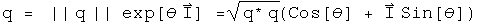
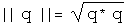
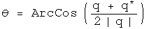
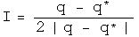
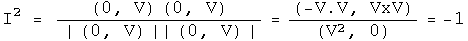
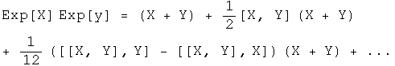
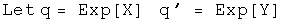
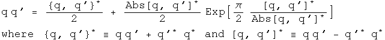
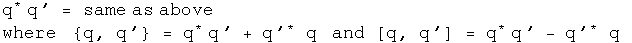

Multiplying Quaternions in Polar Coordinate Form
Any quaternion can be written in polar coordinate form, which involves a scalar magnitude and angle, and a 3-vector I (which in some cases can be the more familiar i).

This representation can be useful due to the properties of the exponential function, cosines and sines.
The absolute value of a quaternion is the square root of the norm, which is the transpose of a quaternion multiplied by itself.

The angle is the arccosine of the ratio of the first component of a quaternion over the norm.

The vector component is generated by normalizing the pure quaternion (the final three terms) to the norm of the pure quaternion.

I2 equals -1 just like i2. Let (0, V) = (q - q*)/2.

It should be possible to do Fourier analysis with quaternions, and to form a Dirac delta function (or distribution). That is a project for the future. Those tools are necessary for solving problems in quantum mechanics.
New method for multiplying quaternion exponentials
Multiplying two exponentials is at the heart of modern analysis, whether one works with Fourier transforms or Lie groups. Given a Lie algebra of a Lie group in a sufficiently small area the identity, the product of two exponentials can be defined using the Campbell-Hausdorff formula:

This formula is not easy to use, and is only applicable in a small area around unity. Quaternion analysis that relies on this formula would be very limited.
I have developed (perhaps for the first time) a simpler and general way to express the product of two quaternion exponentials as the sum of two components. The product of two quaternions splits into a commuting and an anti-commuting part. The rules for multiplying commuting quaternions are identical to those for complex numbers. The anticommuting part needs to be purely imaginary. The Grassman product (q q') of two quaternion exponentials and the Euclidean product (q* q') should both have these properties. Together these define the needs for the product of two quaternion exponentials.



I call these operators "conjugators" because they involve taking the conjugate of the two elements. Andrew Millard made the suggestion for the Grassman product that unifies these approaches nicely. What is happening here is that both commuting and anticommuting parts scale themselves appropriately. By using an exponential that has pi/2 multiplied by a normalized quaternion, this always has a zero scalar, as it must to accurately represent an anticommuting part.